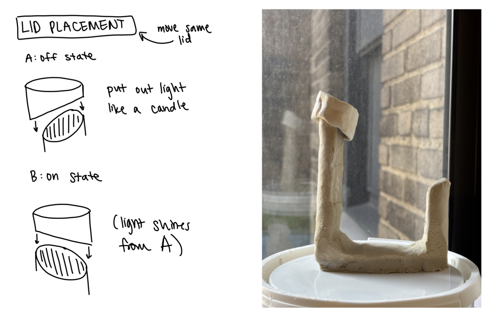
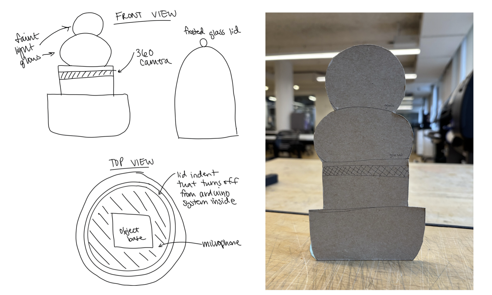
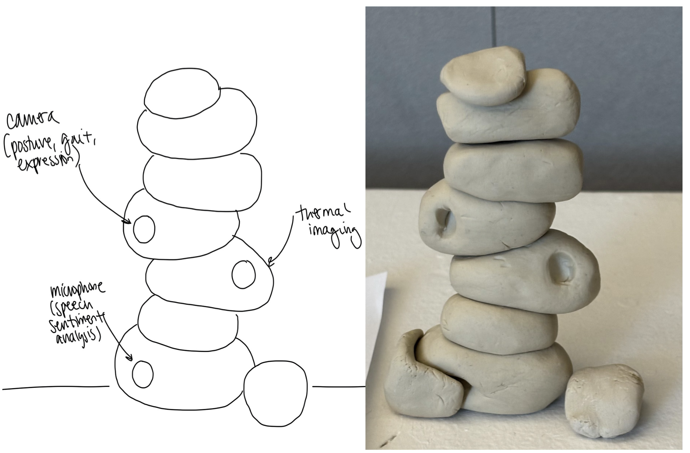
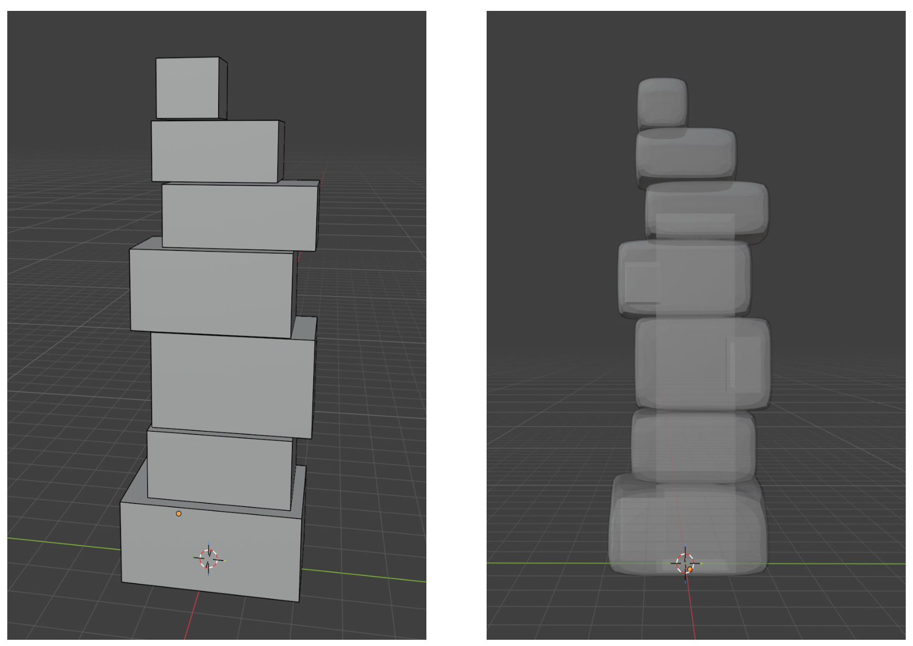
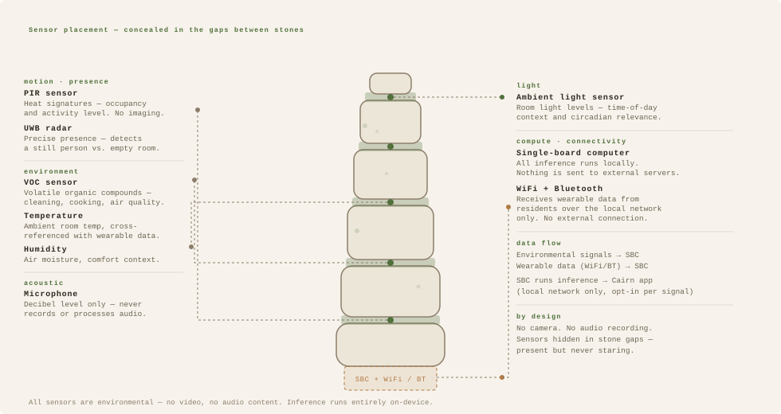

Cairn
Cairn is a speculative IoT smart home system that builds a digital portrait of a home's emotional climate. It proposes using machine learning to read deviations related to emotions from combining data from the wearables and this smart home device in a household and lets people choose whether to share their aggregate signal locally with the people they live with to promote better understanding and communication.


How might technology lower the barrier to understanding others in our domestic spaces?
The year after I finished my undergraduate degree, my close friends and I scattered into different fields with different days. We did our best to support one another, but our lives had diverged so quickly that reading someone's mood became guesswork, and that guesswork quietly bred conflict, rooted not in indifference but in a lack of understanding of what was shaping each other's days.
No technology should replace the work of actually talking to each other through that. But what if it could lower the barrier to entering it? Instead of fumbling in the dark trying to read someone, what if you had just enough awareness to know when to reach out, how to time a conversation, or simply that something was worth acknowledging?
The leading question
The distinction between technology that replaces human connection and technology that creates the conditions for it.
That line is what drove this project, and it is one that HCI researchers are still actively exploring. Cairn lives squarely on the second side of it.
Reading emotion against a household's own baseline, never against "good" or "bad."
To keep the project speculative but grounded, I ran a literature review with Dr. Jorge Ortiz, Director of the Sensing & Reasoning Lab at Rutgers. The technology Cairn needs doesn't fully exist yet, but it could soon, and the science already points the way.
One signal, many sources
Cairn links data a home already produces (Oura, WHOOP, Fitbit, Apple Watch, Nest, Echo) rather than installing a wall of new, costly, surveillance-feeling sensors.
Trained on you, for two weeks
ML compares each reading to a baseline learned from that specific home, not to a universal "healthy" score. A sports fan mid-game looks stressed, but that's joy in context.
An LLM that understands context
Current LLMs can reason about the relationship between a situation and the language used to express it (something command-based smart homes fail at) to infer what a deviation means.
An emotional signature for the household, redrawn every evening.
The interface is a piece of data humanism, inspired by Giorgia Lupi and Stefanie Posavec (abstract, poetic, and legible at a glance rather than a dashboard of raw numbers). Each evening it generates a fresh visualization from the modalities people have consented to share that day. The form is a custom radial clock — built with Gemini, designed in Figma, brought to life with Claude — where each ring encodes a week of signal and each arc is a day. The household sees its aggregate first, then each person's signature individually, each with a short plain-language inference.
Navigation divides into inferences about the day (shown only after 8pm), inferences about housemates from the day before, the home's physical environment, the logged-in user's own stats, and a privacy tab kept in the main navigation, a deliberate choice to make how the system works as visible as everything else. It closes each day with a gentle nudge to actually go connect.
Iterating Layered Data Levels
Before landing on the radial signature, the harder question was what data the visualization should draw from — the form followed once that shifted.
Designing for multiple people in one household is a fundamentally different problem than designing for one person. The questions compound fast: how does data evolve between weeks? How does the interface hold a single-person household just as well as a family of three? If an aggregate week is shown, what happens to the individual data points — and how does someone navigate between members without losing the sense of a shared home? What about the time of day a signal happened, the context behind it? Each of these was not an aesthetic question. Each was a structural decision about what the system was even claiming to say — and the wrong answer would make the household feel like two people sharing a screen rather than one place they both lived.
A cairn: something that marks a path toward each other.
The physical object had to be beautiful enough to earn a place in a home the way luxury wearables do, without mimicking them, and without ever feeling like it was watching you.

Inspired by Bjørn Karmann's Project Alias, a sliding lid would move between two ends of the object — covering the light to snuff it like a candle (OFF) or revealing it (ON). The on/off mechanic resonated clearly with users. The shape didn't, and a new problem emerged: where does the lid live when sensing is off?

More abstract, organic lamp forms — shapes you'd already expect to live on a shelf or side table. Cardboard prototypes tested the proportions. Closer, but still not sparking the emotional response I was after. The sensor placement problem also remained: how do you embed sensors without making the object feel like it's staring at you?

Stacked stones placed in a landscape to mark a path — people have built them for thousands of years to say "here's where to go next." That is exactly what this system is for: not to judge a home's emotional landscape, but to help the people in it find their way toward one another. The organic stacked form also solved the sensor placement problem that had followed every earlier direction: the gaps between stones could hold the sensors — present but never staring. Users responded immediately. The lid was dropped entirely; on/off moved into the interface and the light.

I learned Blender from scratch to model it, and Jovana Gavrilović helped 3D-print it in white PLA. I added soft fake moss by hand, a reference to a future where we live in symbiosis with technology and nature. I deliberately left off any microphone or camera texture: visible surveillance cues would make it feel watched. Instead, the sensors hide in the gaps between the stones, present but never staring.


The on/off state is controlled from the interface, with the lights as physical confirmation, so a household always has a legible, at-a-glance answer to whether the home is sensing. In testing, people said they could look at it for a while and would happily put it anywhere in their house.
What a quantified home adds to the field.
Cairn's contribution is a reframing. It moves the quantified self (the individual body optimized in isolation) toward the quantified home, where the unit of measurement is the shared emotional life of a household rather than a single set of metrics.
The same sensing that smart homes and wearables already perform for corporate benefit is turned back toward the people who produce the data: kept local, offered on their terms, and aimed not at optimizing feelings but at making them a little more legible to the people you live with.
By grounding a speculative future in technology that already exists, Cairn argues that the future of smart homes and wearables lies in their integration, an ambient AI that processes quietly in the background and, like nature, exists in symbiosis with us rather than against us.
And because that technology is so close, the project is also an argument for responsibility: the ethical and security landscape of this data is still ours to shape, while the design decisions that will define it are being made.
The future is bright, and we are lucky to get to design what living alongside it feels like.
With thanks.
To my thesis faculty, John Sharp, Andrew Zornoza, David Carroll, and Barbara Morris, thank you for the questions that kept this honest and ambitious at once.
To Dr. Jorge Ortiz, Director of the Sensing & Reasoning Lab at Rutgers, who shaped my understanding of where smart homes and AI in the home are actually headed, and patiently answered my many questions; to Mani Nilchiani, Richard The, and Vasuki Sunder for conversations that sharpened the direction of the work; and to Jovana Gavrilović, to whom I owe the 3D printing of this project entirely.
And to my loved ones, for their unconditional support.